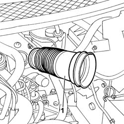
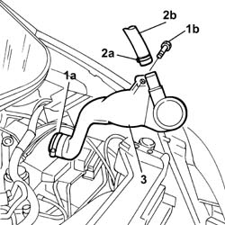

1048A50 AIR INLET PIPE TO TURBO CHARGER - R + R
- Path
- Procedures > 10 ENGINE > 1048 ENGINE AIR SUPPLY CIRCUIT > 1048A VACUUM AIR CIRCUIT > 1048A50 AIR INLET PIPE TO TURBO CHARGER - R + R
- Kind
- repair procedure (removal / refitting; the operation number is the code)
- Applies to
- all engines; all production periods
- Interactive page
- https://sloeber94.github.io/elrnDB-fUlss/en/#/179007003
Applies to: engines: 2.2 16V JTD; all production periods
 Removing
Removing
 Refitting
Refitting- Disconnect the negative battery terminal.
Op. 5010B18 CLIMATE CONTROL UNIT AIR INTAKE - R.R.
See in Op. 1048A10
1.. Loosen the band and remove the hose from the air filter to the turbocharger air inlet pipe.

Applies to: engines: 2.2 16V JTD; all production periods
Op. 7055B54 UNDER-ENGINE GUARD - R R
1. Remove the band (1a) and undo the fixing bolts (1b).
- Lower the vehicle.
2. Remove the band (2a) and move the engine oil vapour recirculation pipe (2b) aside.
3. Remove the turbocharger air intake pipe.

Applies to: engines: 2.2 16V JTD; all production periods
Refitting
Removing- Place the turbocharger air inlet pipe in position.
- Tighten the bolts fixing the pipe.
- Fit the oil vapour pipe on the turbocharger air intale pipe.
- Renew the retaining bands.
Op. 7055B54 UNDER-ENGINE GUARD - R R
- Fit the air hose on the filter and renew the fastening band.
See in Op. 1048A10
Op. 5010B18 CLIMATE CONTROL UNIT AIR INTAKE - R.R.
- Connect the negative battery terminal.
Applies to: engines: 2.0 16V JTD; all production periods
Removing
Refitting- Disconnect the negative battery terminal.
Op. 5010B18 CLIMATE CONTROL UNIT AIR INTAKE - R.R.
See in Op. 1048A10
- Loosen the band and remove the hose from the filter to the turbocharger air inlet pipe.
Applies to: engines: 2.0 16V JTD; all production periods
Op. 7055B54 UNDER-ENGINE GUARD - R R
1. Remove the band (1a) and undo the fixing bolts (1b).
- Lower the vehicle.
2. Remove the band (2a) and move the engine oil vapour recirculation pipe (2b) aside.
3. Remove the turbocharger air intake pipe.
Applies to: engines: 2.0 16V JTD; all production periods
Refitting
Removing- Place the turbocharger air inlet pipe in position.
- Tighten the bolts fixing the pipe.
- Fit the oil vapour pipe on the turbocharger air inlet pipe.
- Renew the retaining bands.
Op. 7055B54 UNDER-ENGINE GUARD - R R
- Fit the air hose on the filter and renew the fastening band.
See in Op. 1048A10
Op. 5010B18 CLIMATE CONTROL UNIT AIR INTAKE - R.R.
- Connect the negative battery terminal.
Topics linked from this page (2)
Topics that link to this page (10)
- 1016C10 SINGLE CYLINDER HEAD - R.R. AND REPLACE GASKET
- 1016B10 SINGLE CAMSHAFT HOUSING - REPLACE GASKET
- 1016B12 SINGLE CAMSHAFT HOUSING - R.R. WITH TIMING BELT REMOVED - REPLACE GASKET
- 1028H10 PISTON WITH CONNECTING ROD - R R
- 1036C10 CAMSHAFTS IN CAMSHAFT HOUSING - R.R - INCLUDES CAMSHAFT HOUSING REPLACEMENT, IF NECESSARY
- 1064A19 TURBOCHARGER UNIT - EXHAUST MANIFOLD - COUPLING SLEEVE AND EXHAUST PIPES - R R
- 1088C30 THERMOSTAT UNIT - R+R
- 3330C10 MASTER CYLINDER (PUMP) - R + R
- 3330C30 BRAKE FLUID RESERVOIR - R + R AND WASH INSIDE
- 3330D10 BRAKE SERVO - R+R - INCLUDES SEPARATION FROM MASTER CYLINDER (PUMP)